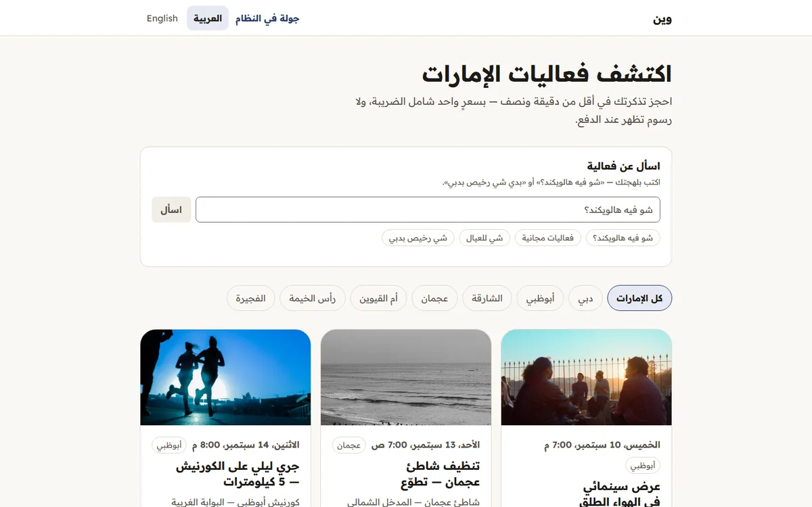

جرّبه هلق
الزبون بيحجز ويدفع ويستلم تذكرته لحاله، وصاحب الفعالية بيتابع كل شي من لوحته.
- الزبون بيشوف السعر النهائي قبل ما يكبس أي زر، وبتطلعله تذكرة برمز بيتحقّقوا منه عالباب.
- صاحب الفعالية بيشوف مبيعاته ومستحقاته وموعد صرفها، بلا ما تنكشفله بيانات تواصل المشترين.
- كل حركة مال إلها قيد محاسبي وسجلّ ما بينعدّل، وكل فعالية بتمرّ على مراجعة قبل ما تنعرض.
نسخة تجريبية: الدفع فيها محاكاة والإيميل ما بيطلع، وحسابات التجربة مكتوبة على شاشات الدخول.